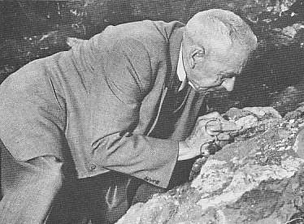

Biographien: Robert Broom

Robert Broom was born in Scotland in 1866 to a poor family. Educated as a doctor specializing in midwifery, he used that profession to support himself while travelling the world. Fascinated by the origin of the mammals, he travelled to Australia in 1892. Five years later, he went to South Africa, where he would stay for the rest of his life.Im Jahr 1910 kostete Brooms insistence auf die Evolutionstheorie ihm seinen Posten an der University of Stellenbosch, einer extrem konservativen religiösen Institution, und er begann, in der abgelegenen Karoo-Region Südafrikas Medizin auszuüben. Er übte auch Paläontologie aus und wurde zum weltweit führenden Experten für Säugetierähnliche Reptilien, die in dieser Region in großer Zahl gefunden wurden. Seine paläontologische Arbeit wurde so hoch geschätzt, dass er 1920 zum Fellow der Royal Society ernannt wurde.
Im Jahr 1934, im Alter von 68 Jahren, gab er seine medizinische Praxis auf, um eine Position am Transvaal Museum in Pretoria anzunehmen. Im Jahr 1936 beschloss er, nach weiteren Fossilien von Darts Australopithecinen zu suchen, und fand im selben Jahr einen fragmentarischen Schädel eines Erwachsenen in Sterkfontein (den er zunächst einer neuen Gattung, Plesianthropus, zuordnete). Im Jahr 1938 fand er den ersten robusten Australopithecinen-Schädel in Kromdraai, nachdem ein Schuljunge einige Zähne an der Fundstelle entdeckt hatte. Es folgten weitere Funde, doch erst als Broom 1946 eine bedeutende Monografie über die Australopithecinen veröffentlichte und der einflussreiche britische Wissenschaftler W. E. Le Gros Clark die Fossilien 1947 untersuchte, akzeptierten die meisten Wissenschaftler endgültig, dass die Australopithecinen zu den Menschenaffen (Hominiden) gehörten. Zu den weiteren bedeutenden Funden gehörten Sts 5, ein hervorragender Fossilien-Schädel, und Sts 14, ein unvollständiges Skelett, das aus einem Großteil des Beckens, des Oberschenkelknochens und der Wirbelsäule bestand und überzeugend bewies, dass die Australopithecinen aufrecht gingen.
Im Jahr 1948 begann er mit Ausgrabungen in Swartkrans, die Überreste ergaben, die später als Homo erectus identifiziert wurden, sowie weitere Fossilien von Australopithecinen.
Etwas exzentrisch, bewusste Broom über seinen Ruf als Arzt, trug er auch beim Fossilensuchen immer einen formellen dunklen Anzug, würde sich jedoch entblößen, wenn es zu heiß wurde. Er blieb bis zum Lebensende unglaublich energiegeladen. Broom hatte versprochen, dass er sich „abnutzen, nicht rosten" werde, und hielt sein Wort. Im Jahr 1951, nachdem er die letzten Zeilen seiner Monografie über die Australopithecinen geschrieben hatte, flüsterte er: „Das ist jetzt fertig ... und ich auch". Er starb wenige Momente später im Alter von 85 Jahren.
Referenzen
Tattersall I. (1995): The fossil trail: how we know what we think we know about human evolution. Oxford,NY: Oxford University Press.Wills C. (1993): The runaway brain: the evolution of human uniqueness. New York: Basic Books.
Robert Broom (1950): Das fehlende Glied finden. London: Watts & Co.
Diese Seite ist Teil des FAQ zu fossilen Menschenaffen im TalkOrigins-Archiv.
Startseite |
Arten |
Fossilien |
Kreationismus |
Lektüre |
Referenzen
Illustrationen |
Neuigkeiten |
Feedback |
Suche |
Links |
Fiktion
http://www.talkorigins.org/faqs/homs/rbroom.html, 04/24/98
Copyright © Jim Foley
|| Email mir